This tutorial will focus on the use of Bayesian estimation to fit simple linear regression models …
Keywords
Software, Statistics, Stan
This tutorial will focus on the use of Bayesian estimation to fit simple linear regression models. BUGS (Bayesian inference Using Gibbs Sampling) is an algorithm and supporting language (resembling R) dedicated to performing the Gibbs sampling implementation of Markov Chain Monte Carlo (MCMC) method. Dialects of the BUGS language are implemented within three main projects:
OpenBUGS - written in component pascal.
JAGS - (Just Another Gibbs Sampler) - written in C++.
STAN - a dedicated Bayesian modelling framework written in C++ and implementing Hamiltonian MCMC samplers.
Whilst the above programs can be used stand-alone, they do offer the rich data pre-processing and graphical capabilities of R, and thus, they are best accessed from within R itself. As such there are multiple packages devoted to interfacing with the various software implementations:
R2OpenBUGS - interfaces with OpenBUGS
R2jags - interfaces with JAGS
rstan - interfaces with STAN
This tutorial will demonstrate how to fit models in JAGS (Plummer (2004)) using the package R2jags (Su et al. (2015)) as interface, which also requires to load some other packages.
Overview
Introduction
Up until now (in the proceeding tutorials), the focus has been on models that adhere to specific assumptions about the underlying populations (and data). Indeed, both before and immediately after fitting these models, I have stressed the importance of evaluating and validating the proposed and fitted models to ensure reliability of the models. It is now worth us revisiting those fundamental assumptions as well as exploring the options that are available when the populations (data) do not conform. Let’s explore a simple linear regression model to see how each of the assumptions relate to the model.
The above simple statistical model models the linear relationship of \(y_i\) against \(x_i\). The residuals (\(\epsilon\)) are assumed to be normally distributed with a mean of zero and a constant (yet unknown) variance (\(\sigma\), homogeneity of variance). The residuals (and thus observations) are also assumed to all be independent.
Homogeneity of variance and independence are encapsulated within the single symbol for variance (\(\sigma^2\)). In assuming equal variances and independence, we are actually making an assumption about the variance-covariance structure of the populations (and thus residuals). Specifically, we assume that all populations are equally varied and thus can be represented well by a single variance term (all diagonal values in a \(N\times N\) covariance matrix are the same, \(\sigma^2\)) and the covariances between each population are zero (off diagonals). In simple regression, each observation (data point) represents a single observation drawn (sampled) from an entire population of possible observations. The above covariance structure thus assumes that the covariance between each population (observation) is zero - that is, each observation is completely independent of each other observation. Whilst it is mathematically convenient when data conform to these conditions (normality, homogeneity of variance, independence and linearity), data often violate one or more of these assumptions. In the following, I want to discuss and explore the causes and options for dealing with non-compliance to each of these conditions. By gaining a better understanding of how the various model fitting engines perform their task, we are better equipped to accommodate aspects of the data that don’t otherwise conform to the simple regression assumptions. In this tutorial we specifically focus on the topic of heterogeneity of the variance.
Dealing with heterogeneity
The validity and reliability of the above linear models are very much dependent on variance homogeneity. In particular, variances that increase (or decrease) with a change in expected values are substantial violations. Whilst non-normality can also be a source of heterogeneity and therefore normalising can address both issues, heterogeneity can also be independent of normality. Similarly, generalised linear models (that accommodate alternative residual distributions - such as Poisson, Binomial, Gamma, etc) can be useful for more appropriate modelling of both the distribution and variance of a model. However, for Gaussian (normal) models in which there is evidence of heterogeneity of variance, yet no evidence of non-normality, it is also possible to specifically model in an alternative variance structure. For example, we can elect to allow variance to increase proportionally to a covariate. To assist us in the following demonstration, we will generate another data set - one that has heteroskedasticity (unequal variance) by design. Rather than draw each residual (and thus observation) from a normal distribution with a constant standard deviation), we will draw the residuals from normal distributions whose variance is proportional to the \(X\) predictor.
set.seed(126)n <-16a <-40#interceptb <-1.5#slopex <-1:n #values of the year covariatesigma <-1.5* xsigma
NA [1] 1.5 3.0 4.5 6.0 7.5 9.0 10.5 12.0 13.5 15.0 16.5 18.0 19.5 21.0 22.5
NA [16] 24.0
eps <-rnorm(n, mean =0, sd = sigma) #residualsy <- a + b * x + eps #response variable# ORy <- (model.matrix(~x) %*%c(a, b)) + epsdata.het <-data.frame(y =round(y, 1), x) #datasethead(data.het) #print out the first six rows of the data set
NA y x
NA 1 42.1 1
NA 2 44.2 2
NA 3 41.2 3
NA 4 51.7 4
NA 5 43.5 5
NA 6 48.3 6
# scatterplot of y against xlibrary(car)scatterplot(y ~ x, data.het)
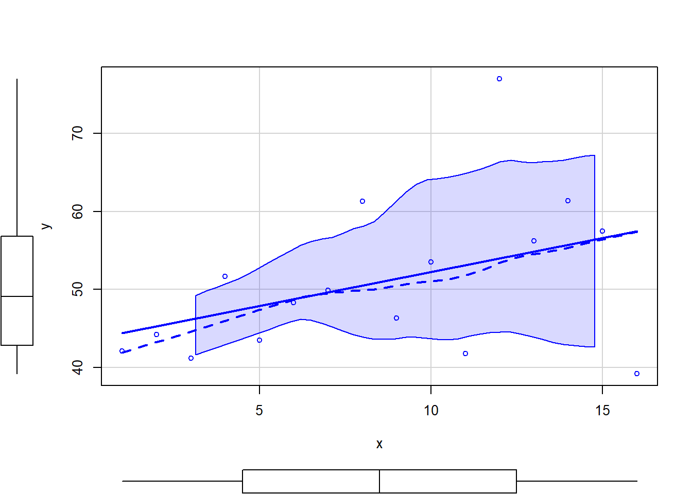
# regular simple linear regressiondata.het.lm <-lm(y ~ x, data.het)# plot of standardised residualsplot(rstandard(data.het.lm) ~fitted(data.het.lm))
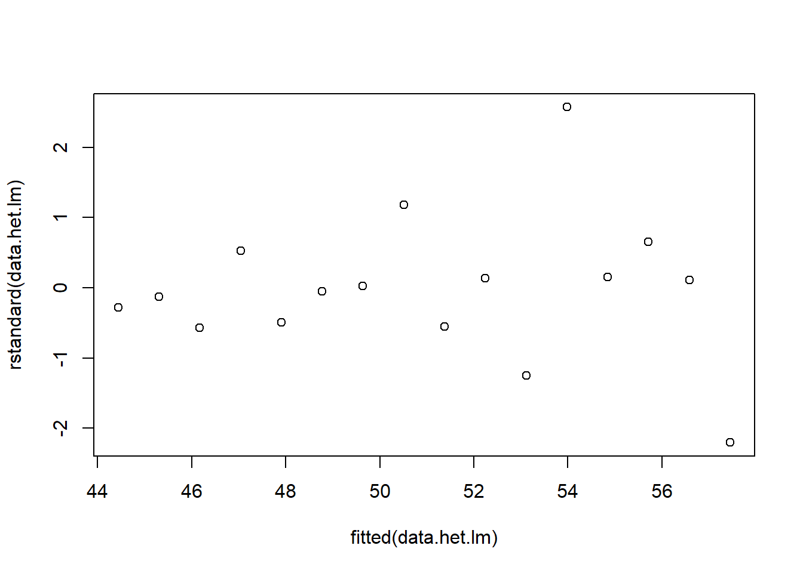
# plot of standardized residuals against the predictorplot(rstandard(data.het.lm) ~ x)
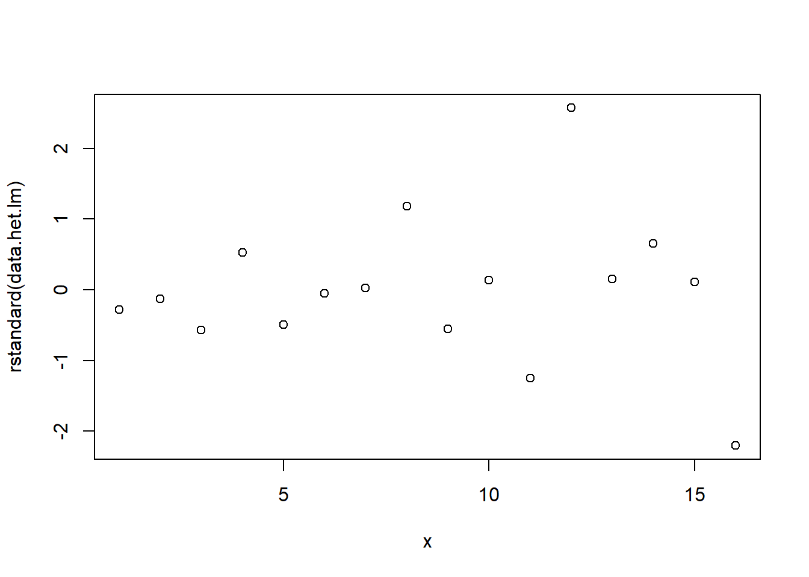
The above scatterplot suggests that variance may increase with increasing \(X\). The residual plot (using standardised residuals) suggests that mean and variance could be related - there is a hint of a wedge-shaped pattern. Importantly, the plot of standardised residuals against the predictor shows the same pattern as the residual plot implying that heterogeneity is likely to be due a relationship between variance \(X\). That is, an increase in \(X\) is associated with an increase in variance. In response to this, we could incorporate an alternative variance structure. The simple model we fit earlier assumed that the expected values were all drawn from normal distributions with the same level of precision \(\tau\) and therefore variance. This assumption is often summarised as:
\[
\boldsymbol V = \sigma^2 \times \boldsymbol I,
\]
where \(\boldsymbol I\) is the \(N \times N\) identity matrix (elements on the main diagonal are one and zero outside) which multipled by the constant value \(\sigma^2\) produces the homoskedastic covariance matrix \(\boldsymbol V\) (elements on the main diagonal are \(\sigma^2\) and zero outside). If, instead, we consider an heteroskedastic covariance matrix then, for example, we could assume that the variance is proportional to the level of the covariate. This assumption can be summarised as:
\[
\boldsymbol V = \sigma^2 \times X \times \boldsymbol I,
\]
where the product of the identity matrix \(\boldsymbol I\) and the covariate-specific values \(\sigma^2 \times X\) produces the heteroskedastic covariance matrix \(\boldsymbol V\) (elements on the main diagonal are \(\sigma^2 \times X\) and zero outside). With a couple of small adjustments, we can modify the JAGS code in order to accommodate a variance structure in which variance is proportional to the predictor variable. Note that since JAGS works with precision (\(\tau=\frac{1}{\sigma^2}\)), I have elected to express the predictor as \(\frac{1}{x}\). This way the weightings are compatible with precision rather than variance. In previous tutorials, we have used a flat, uniform distribution \([0,100]\) for variance priors. Whilst this is a reasonable choice for a non-informative prior, Gelman et al. (2006) suggest that half-cauchy priors are more appropriate when the number of groups is low.
Model fitting
The observed response (\(y_i\)) are assumed to be drawn from a normal distribution with a given mean (\(\mu\)) and standard deviation weighted by \(1\) on the value of the covariate (\(\sigma \times \omega\)). The expected values (\(\mu\)) are themselves determined by the linear predictor (\(\beta_0 + \beta_1x\)). In this case, \(\beta_0\) represents the mean of the first group and the set of \(\beta\)’s represent the differences between each other group and the first group. MCMC sampling requires priors on all parameters. We will employ weakly informative priors. Specifying ‘uninformative’ priors is always a bit of a balancing act. If the priors are too vague (wide) the MCMC sampler can wander off into nonscence areas of likelihood rather than concentrate around areas of highest likelihood (desired when wanting the outcomes to be largely driven by the data). On the other hand, if the priors are too strong, they may have an influence on the parameters. In such a simple model, this balance is very forgiving - it is for more complex models that prior choice becomes more important. For this simple model, we will go with zero-centered Gaussian (normal) priors with relatively large standard deviations (\(100\)) for both the intercept and the treatment effect and a wide half-cauchy (\(\text{scale}=5\)) for the standard deviation.
\[
y_i \sim N(\mu_i,\sigma \times \omega),
\]
where \(\mu_i=\beta_0 +\boldsymbol \beta \boldsymbol X\). The assumed priors are: \(\beta \sim N(0,100)\) and \(\sigma \sim \text{Cauchy}(0,5)\). We note that we can also indirectly specify the prior on \(\sigma\) by expressing the standard deviation as the ratio between two variable: \(\sigma=\frac{z}{\sqrt{\chi}}\). The numerator is a zero-truncated normally distributed variable \(z \sim N(0, 0.04) I(0,)\), while the denominator is the square root of a variable distributed according to a Gamma distribution \(\chi \sim \text{Gamma}(0.5,0.5)\) (equivalent to a \(\chi^2\) distribution with \(1\) degrees of freedom).
We proceed to code the model into JAGS (remember that in this software normal distribution are parameterised in terms of precisions \(\tau\) rather than variances, where \(\tau=\frac{1}{\sigma^2}\)). Note the following example as group means calculated as derived posteriors.
modelString =" model { #Likelihood for (i in 1:n) { y[i]~dnorm(mu[i],tau*(1/x[i])) mu[i] <- beta0+beta1*x[i] } #Priors and derivatives beta0 ~ dnorm(0,1.0E-6) beta1 ~ dnorm(0,1.0E-6) sigma <- z/sqrt(chSq) # prior for sigma; cauchy = normal/sqrt(chi^2) z ~ dnorm(0, 0.04)I(0,) chSq ~ dgamma(0.5, 0.5) # chi^2 with 1 d.f. tau <- pow(sigma, -2) } "## write the model to a text filewriteLines(modelString, con ="heteroskModel.txt")
Arrange the data as a list (as required by JAGS). As input, JAGS will need to be supplied with: the response variable, the predictor matrix, the number of predictors, the total number of observed items. This all needs to be contained within a list object. We will create two data lists, one for each of the hypotheses.
data.het.list <-with(data.het, list(y = y, x = x, n =nrow(data.het)))
Define the nodes (parameters and derivatives) to monitor and the chain parameters.
Start the JAGS model (check the model, load data into the model, specify the number of chains and compile the model). Load the R2jags package.
library(R2jags)
Now run the JAGS code via the R2jags interface. Note that the first time jags is run after the R2jags package is loaded, it is often necessary to run any kind of randomization function just to initiate the .Random.seed variable.
NA Compiling model graph
NA Resolving undeclared variables
NA Allocating nodes
NA Graph information:
NA Observed stochastic nodes: 16
NA Unobserved stochastic nodes: 4
NA Total graph size: 111
NA
NA Initializing model
print(data.het.r2jags)
NA Inference for Bugs model at "heteroskModel.txt", fit using jags,
NA 2 chains, each with 10500 iterations (first 3000 discarded)
NA n.sims = 15000 iterations saved
NA mu.vect sd.vect 2.5% 25% 50% 75% 97.5% Rhat n.eff
NA beta0 41.492 2.571 36.510 39.844 41.466 43.160 46.599 1.001 15000
NA beta1 1.114 0.401 0.313 0.857 1.112 1.371 1.913 1.001 15000
NA sigma 3.070 0.629 2.119 2.627 2.969 3.410 4.592 1.002 1300
NA deviance 110.901 2.744 107.742 108.871 110.200 112.216 117.874 1.002 2800
NA
NA For each parameter, n.eff is a crude measure of effective sample size,
NA and Rhat is the potential scale reduction factor (at convergence, Rhat=1).
NA
NA DIC info (using the rule, pD = var(deviance)/2)
NA pD = 3.8 and DIC = 114.7
NA DIC is an estimate of expected predictive error (lower deviance is better).
MCMC diagnostics
In addition to the regular model diagnostic checks (such as residual plots), for Bayesian analyses, it is necessary to explore the characteristics of the MCMC chains and the sampler in general. Recall that the purpose of MCMC sampling is to replicate the posterior distribution of the model likelihood and priors by drawing a known number of samples from this posterior (thereby formulating a probability distribution). This is only reliable if the MCMC samples accurately reflect the posterior. Unfortunately, since we only know the posterior in the most trivial of circumstances, it is necessary to rely on indirect measures of how accurately the MCMC samples are likely to reflect the likelihood. I will briefly outline the most important diagnostics.
Traceplots for each parameter illustrate the MCMC sample values after each successive iteration along the chain. Bad chain mixing (characterised by any sort of pattern) suggests that the MCMC sampling chains may not have completely traversed all features of the posterior distribution and that more iterations are required to ensure the distribution has been accurately represented.
Autocorrelation plot for each parameter illustrate the degree of correlation between MCMC samples separated by different lags. For example, a lag of \(0\) represents the degree of correlation between each MCMC sample and itself (obviously this will be a correlation of \(1\)). A lag of \(1\) represents the degree of correlation between each MCMC sample and the next sample along the chain and so on. In order to be able to generate unbiased estimates of parameters, the MCMC samples should be independent (uncorrelated).
Potential scale reduction factor (Rhat) statistic for each parameter provides a measure of sampling efficiency/effectiveness. Ideally, all values should be less than \(1.05\). If there are values of \(1.05\) or greater it suggests that the sampler was not very efficient or effective. Not only does this mean that the sampler was potentially slower than it could have been but, more importantly, it could indicate that the sampler spent time sampling in a region of the likelihood that is less informative. Such a situation can arise from either a misspecified model or overly vague priors that permit sampling in otherwise nonscence parameter space.
Prior to examining the summaries, we should have explored the convergence diagnostics. We use the package mcmcplots to obtain density and trace plots for the effects model as an example. When there are a lot of parameters, this can result in a very large number of traceplots. To focus on just certain parameters, e.g. \(\boldsymbol \beta\).
Trace plots show no evidence that the chains have not reasonably traversed the entire multidimensional parameter space. When there are a lot of parameters, this can result in a very large number of traceplots. To focus on just certain parameters (such as \(\beta\)s).
NA [[1]]
NA
NA Quantile (q) = 0.025
NA Accuracy (r) = +/- 0.005
NA Probability (s) = 0.95
NA
NA Burn-in Total Lower bound Dependence
NA (M) (N) (Nmin) factor (I)
NA beta0 2 3938 3746 1.050
NA beta1 2 3729 3746 0.995
NA deviance 2 3770 3746 1.010
NA sigma 4 4643 3746 1.240
NA
NA
NA [[2]]
NA
NA Quantile (q) = 0.025
NA Accuracy (r) = +/- 0.005
NA Probability (s) = 0.95
NA
NA Burn-in Total Lower bound Dependence
NA (M) (N) (Nmin) factor (I)
NA beta0 2 3853 3746 1.030
NA beta1 2 3895 3746 1.040
NA deviance 2 3729 3746 0.995
NA sigma 3 4346 3746 1.160
The Raftery diagnostics for each chain estimate that we would require no more than \(5000\) samples to reach the specified level of confidence in convergence. As we have \(10500\) samples, we can be confidence that convergence has occurred.
NA beta0 beta1 deviance sigma
NA Lag 0 1.000000000 1.0000000000 1.000000000 1.000000000
NA Lag 1 0.011777589 0.0071404620 0.229687388 0.247278554
NA Lag 5 0.006349593 0.0032513419 -0.000699578 0.011972761
NA Lag 10 -0.001248639 -0.0002634626 -0.010327446 -0.001271626
NA Lag 50 0.018019858 -0.0055775204 -0.013066989 0.010275604
A lag of 10 appears to be sufficient to avoid autocorrelation (poor mixing).
Model validation
Model validation involves exploring the model diagnostics and fit to ensure that the model is broadly appropriate for the data. As such, exploration of the residuals should be routine. For more complex models (those that contain multiple effects), it is also advisable to plot the residuals against each of the individual predictors. For sampling designs that involve sample collection over space or time, it is also a good idea to explore whether there are any temporal or spatial patterns in the residuals.
There are numerous situations (e.g. when applying specific variance-covariance structures to a model) where raw residuals do not reflect the interior workings of the model. Typically, this is because they do not take into account the variance-covariance matrix or assume a very simple variance-covariance matrix. Since the purpose of exploring residuals is to evaluate the model, for these cases, it is arguably better to draw conclusions based on standardized (or studentised) residuals. Unfortunately the definitions of standardised and studentised residuals appears to vary and the two terms get used interchangeably. I will adopt the following definitions:
Standardised residuals. The raw residuals divided by the true standard deviation of the residuals (which of course is rarely known).
Studentised residuals. The raw residuals divided by the standard deviation of the residuals. Note that externally studentised residuals are calculated by dividing the raw residuals by a unique standard deviation for each observation that is calculated from regressions having left each successive observation out.
Pearson residuals. The raw residuals divided by the standard deviation of the response variable.
he mark of a good model is being able to predict well. In an ideal world, we would have sufficiently large sample size as to permit us to hold a fraction (such as \(25\)%) back thereby allowing us to train the model on \(75\)% of the data and then see how well the model can predict the withheld \(25\)%. Unfortunately, such a luxury is still rare. The next best option is to see how well the model can predict the observed data. Models tend to struggle most with the extremes of trends and have particular issues when the extremes approach logical boundaries (such as zero for count data and standard deviations). We can use the fitted model to generate random predicted observations and then explore some properties of these compared to the actual observed data.
Rather than dublicate this for both additive and multiplicative models, we will only explore the multiplicative model. Residuals are not computed directly within JAGS. However, we can calculate them manually form the posteriors.
mcmc = data.het.r2jags$BUGSoutput$sims.matrix[, c("beta0", "beta1")]# generate a model matrixnewdata =data.frame(x = data.het$x)Xmat =model.matrix(~x, newdata)## get median parameter estimatescoefs =apply(mcmc, 2, median)fit =as.vector(coefs %*%t(Xmat))resid = data.het$y - fitlibrary(ggplot2)ggplot() +geom_point(data =NULL, aes(y = resid, x = fit)) +theme_classic()
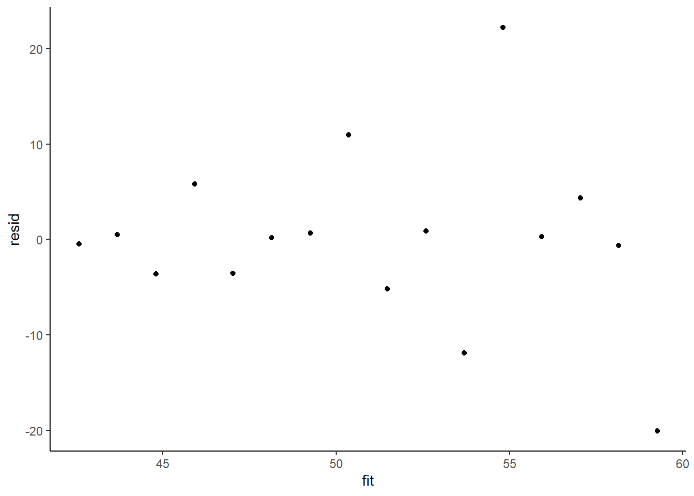
The above residual plot would make us believe that we had a homogeneity of variance issue (which we thought we were addressing by defining a model that allowed the variance to be proportional to the predictor). This is because we have plotted the raw residuals rather than residuals that have been standardized by the variances. The above plot is also what the residual plot would look like if we had not made any attempt to define a model in which the variance was related to the predictor. Whenever we fit a model that incorporates changes to the variance-covariance structures, we should explore standardised residuals. In this case, we should divide the residuals by sigma and then divide by the square-root of the weights.
This is certainly an improvement. Nevertheless, there is still an indication of a relationship between mean and variance. We could attempt to further address this by refining \(\omega\) in the Bayesian model. That is, rather than indicate that variance is proportional to \(x\), we could indicate that variance is proportional to \(x^2\) (as an example) - we will leave this as an exercise for the reader. Residuals against predictors.
ggplot() +geom_point(data =NULL, aes(y = resid, x = data.het$x)) +theme_classic()
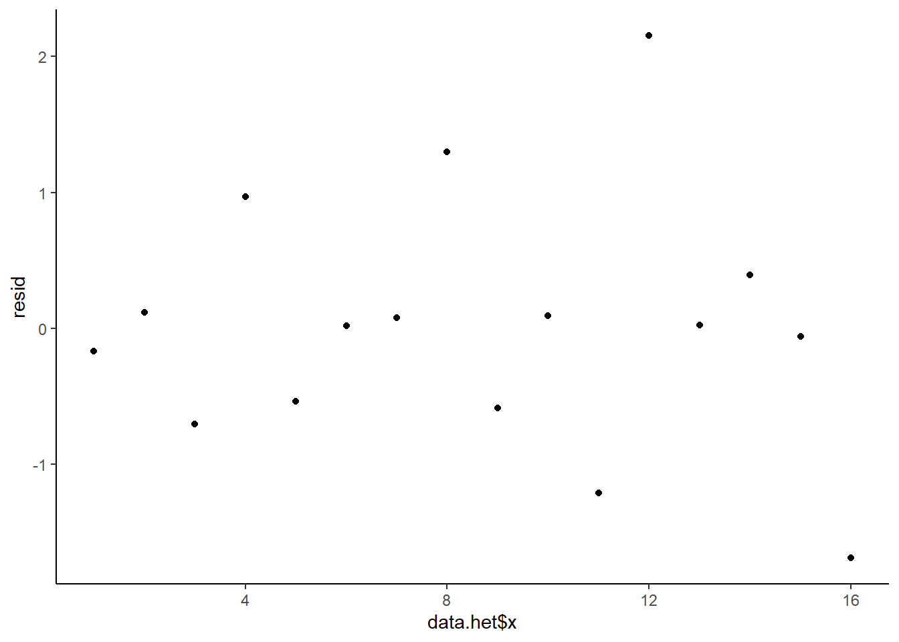
Lets see how well data simulated from the model reflects the raw data.
mcmc = data.het.r2jags$BUGSoutput$sims.matrix# generate a model matrixXmat =model.matrix(~x, data.het)## get median parameter estimatescoefs = mcmc[, c("beta0", "beta1")]fit = coefs %*%t(Xmat)## draw samples from this modelyRep =sapply(1:nrow(mcmc), function(i) rnorm(nrow(data.het), fit[i, ], mcmc[i, "sigma"]))ggplot() +geom_density(data =NULL, aes(x =as.vector(yRep), fill ="Model"),alpha =0.5) +geom_density(data = data.het, aes(x = y, fill ="Obs"),alpha =0.5) +theme_classic()
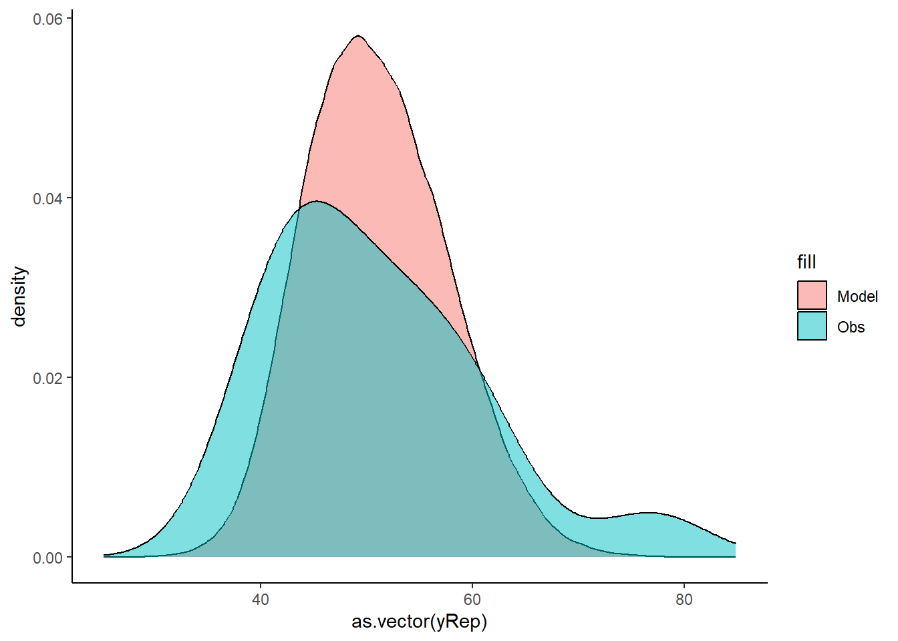
Parameter estimates
First, we look at the results from the model.
print(data.het.r2jags)
NA Inference for Bugs model at "heteroskModel.txt", fit using jags,
NA 2 chains, each with 10500 iterations (first 3000 discarded)
NA n.sims = 15000 iterations saved
NA mu.vect sd.vect 2.5% 25% 50% 75% 97.5% Rhat n.eff
NA beta0 41.492 2.571 36.510 39.844 41.466 43.160 46.599 1.001 15000
NA beta1 1.114 0.401 0.313 0.857 1.112 1.371 1.913 1.001 15000
NA sigma 3.070 0.629 2.119 2.627 2.969 3.410 4.592 1.002 1300
NA deviance 110.901 2.744 107.742 108.871 110.200 112.216 117.874 1.002 2800
NA
NA For each parameter, n.eff is a crude measure of effective sample size,
NA and Rhat is the potential scale reduction factor (at convergence, Rhat=1).
NA
NA DIC info (using the rule, pD = var(deviance)/2)
NA pD = 3.8 and DIC = 114.7
NA DIC is an estimate of expected predictive error (lower deviance is better).
NA # A tibble: 3 × 5
NA term estimate std.error conf.low conf.high
NA <chr> <dbl> <dbl> <dbl> <dbl>
NA 1 beta0 41.5 2.57 36.5 46.6
NA 2 beta1 1.11 0.401 0.338 1.94
NA 3 sigma 3.07 0.629 2.00 4.35
Conclusions
A one unit increase in \(x\) is associated with a \(1.11\) change in \(y\). That is, \(y\) declines at a rate of \(1.11\) per unit increase in \(x\). The \(95\)% confidence interval for the slope does not overlap with \(0\) implying a significant effect of \(x\) on \(y\). While workers attempt to become comfortable with a new statistical framework, it is only natural that they like to evaluate and comprehend new structures and output alongside more familiar concepts. One way to facilitate this is via Bayesian p-values that are somewhat analogous to the frequentist p-values for investigating the hypothesis that a parameter is equal to zero.
mcmcpvalue <-function(samp) {## elementary version that creates an empirical p-value for the## hypothesis that the columns of samp have mean zero versus a general## multivariate distribution with elliptical contours.## differences from the mean standardized by the observed## variance-covariance factor## Note, I put in the bit for single termsif (length(dim(samp)) ==0) { std <-backsolve(chol(var(samp)), cbind(0, t(samp)) -mean(samp),transpose =TRUE) sqdist <-colSums(std * std)sum(sqdist[-1] > sqdist[1])/length(samp) } else { std <-backsolve(chol(var(samp)), cbind(0, t(samp)) -colMeans(samp),transpose =TRUE) sqdist <-colSums(std * std)sum(sqdist[-1] > sqdist[1])/nrow(samp) }}## since values are less than zeromcmcpvalue(data.het.r2jags$BUGSoutput$sims.matrix[, c("beta1")])
NA [1] 0.0092
With a p-value of essentially \(0\), we would conclude that there is almost no evidence that the slope was likely to be equal to zero, suggesting there is a relationship.
Graphical summaries
A nice graphic is often a great accompaniment to a statistical analysis. Although there are no fixed assumptions associated with graphing (in contrast to statistical analyses), we often want the graphical summaries to reflect the associated statistical analyses. After all, the sample is just one perspective on the population(s). What we are more interested in is being able to estimate and depict likely population parameters/trends. Thus, whilst we could easily provide a plot displaying the raw data along with simple measures of location and spread, arguably, we should use estimates that reflect the fitted model. In this case, it would be appropriate to plot the credibility interval associated with each group.
If you wanted to represent sample data on the figure in such a simple example (single predictor) we could simply over- (or under-) lay the raw data.
ggplot(newdata, aes(y = estimate, x = x)) +geom_point(data = data.het,aes(y = y, x = x), color ="gray") +geom_line() +geom_ribbon(aes(ymin = conf.low,ymax = conf.high), fill ="blue", alpha =0.3) +scale_y_continuous("Y") +scale_x_continuous("X") +theme_classic()
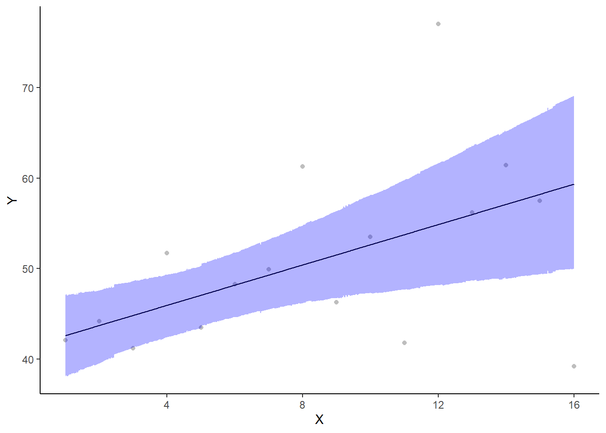
A more general solution would be to add the partial residuals to the figure. Partial residuals are the fitted values plus the residuals. In this simple case, that equates to exactly the same as the raw observations since \(\text{resid}=\text{obs}−\text{fitted}\) and the fitted values depend only on the single predictor we are interested in.
In a frequentist context, the \(R^2\) value is seen as a useful indicator of goodness of fit. Whilst it has long been acknowledged that this measure is not appropriate for comparing models (for such purposes information criterion such as AIC are more appropriate), it is nevertheless useful for estimating the amount (percent) of variance explained by the model. In a frequentist context, \(R^2\) is calculated as the variance in predicted values divided by the variance in the observed (response) values. Unfortunately, this classical formulation does not translate simply into a Bayesian context since the equivalently calculated numerator can be larger than the an equivalently calculated denominator - thereby resulting in an \(R^2\) greater than \(100\)%. Gelman et al. (2019) proposed an alternative formulation in which the denominator comprises the sum of the explained variance and the variance of the residuals.
So in the standard regression model notation of:
\[
y_i \sim \text{Normal}(\boldsymbol X \boldsymbol \beta, \sigma),
\]
NA # A tibble: 1 × 5
NA term estimate std.error conf.low conf.high
NA <chr> <dbl> <dbl> <dbl> <dbl>
NA 1 var1 0.244 0.108 0.0309 0.440
# for comparison with frequentist summary(lm(y ~ x, data.het))
Heteroskedasticity with categorical predictors
For regression models that include a categorical variable (e.g. ANOVA), heterogeneity manifests as vastly different variances for different levels (treatment groups) of the categorical variable. Recall, that this is diagnosed from the relative size of boxplots. Whilst, the degree of group variability may not be related to the means of the groups, having wildly different variances does lead to an increase in standard errors and thus a lowering of power. In such cases, we would like to be able to indicate that the variances should be estimated separately for each group. That is the variance term is multiplied by a different number for each group. The appropriate matrix is referred to as an Identity matrix. Again, to assist in the explanation some fabricated ANOVA data - data that has heteroscadasticity by design - will be useful.
set.seed(126)ngroups <-5#number of populationsnsample <-10#number of reps in eachpop.means <-c(40, 45, 55, 40, 30) #population mean lengthsigma <-rep(c(6, 4, 2, 0.5, 1), each = nsample) #residual standard deviationn <- ngroups * nsample #total sample sizeeps <-rnorm(n, 0, sigma) #residualsx <-gl(ngroups, nsample, n, lab = LETTERS[1:5]) #factormeans <-rep(pop.means, rep(nsample, ngroups))X <-model.matrix(~x -1) #create a design matrixy <-as.numeric(X %*% pop.means + eps)data.het1 <-data.frame(y, x)boxplot(y ~ x, data.het1)
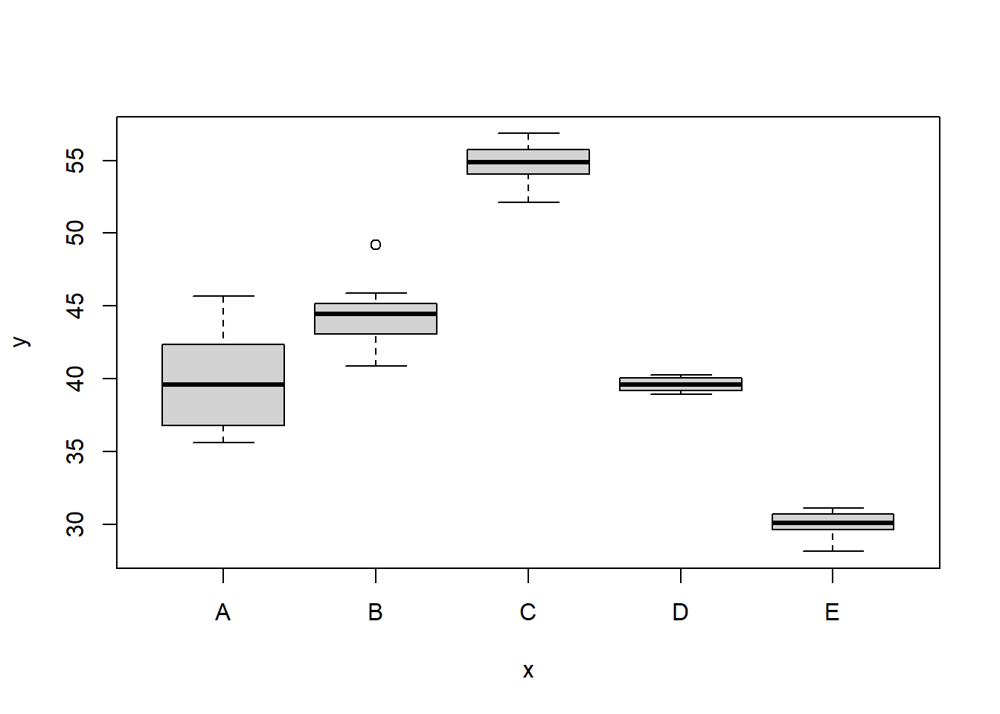
plot(lm(y ~ x, data.het1), which =3)
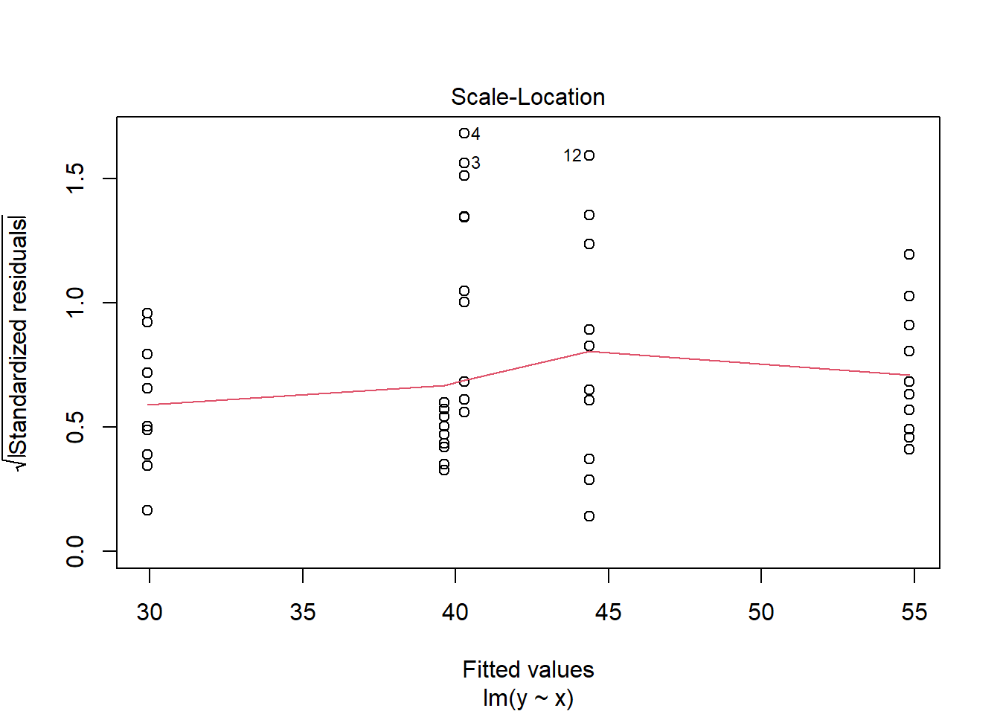
It is clear that there is gross heteroskedasticity. The residuals are obviously more spread in some groups than others yet there is no real pattern with means (the residual plot does not show an obvious wedge). Note, for assessing homogeneity of variance, it is best to use the standardised residuals. It turns out that if we switch over to maximum (log) likelihood estimation methods, we can model in a within-group heteroskedasticity structure rather than just assume one very narrow form of variance structure. Lets take a step back and reflect on our simple ANOVA (regression) model that has five groups each with \(10\) observations:
This is shorthand notation to indicate that the response variable is being modelled against a specific linear predictor and that the residuals follow a normal distribution with a certain variance (that is the same for each group). Rather than assume that the variance of each group is the same, we could relax this a little so as to permit different levels of variance per group:
\[
\epsilon \sim N(0, \sigma^2_i).
\]
To achieve this, we actually multiply the variance matrix by a weighting matrix, where the weights associated with each group are determined by the inverse of the ratio of each group to the first (reference) group:
NA A B C D E
NA 1.0000000 0.6909012 0.4140893 0.1426207 0.3012881
The weights determine the relative amount of each observation that goes into calculating variances. The basic premise is that those with lower variances are likely to be more precise and therefore should have greatest contribution to variance calculations.
Model fitting
modelString2 =" model { #Likelihood for (i in 1:n) { y[i]~dnorm(mu[i],tau[x[i]]) mu[i] <- inprod(beta[],X[i,]) } #Priors and derivatives for (i in 1:ngroups) { beta[i] ~ dnorm(0,1.0E-6) sigma[i] <- z[i]/sqrt(chSq[i]) z[i] ~ dnorm(0, 0.04)I(0,) chSq[i] ~ dgamma(0.5, 0.5) tau[i] <- pow(sigma[i], -2) } } "## write the model to a text filewriteLines(modelString2, con ="heteroskModel2.txt")
Arrange the data as a list (as required by JAGS). As input, JAGS will need to be supplied with: the response variable, the predictor matrix, the number of predictors, the total number of observed items. This all needs to be contained within a list object. We will create two data lists, one for each of the hypotheses.
X =model.matrix(~x, data.het1)data.het1.list <-with(data.het1, list(y = y, x =as.numeric(x), X = X,n =nrow(data.het1), ngroups =ncol(X)))
Define the nodes (parameters and derivatives) to monitor and the chain parameters.
Now run the JAGS code via the R2jags interface. Note that the first time jags is run after the R2jags package is loaded, it is often necessary to run any kind of randomization function just to initiate the .Random.seed variable.
NA Compiling model graph
NA Resolving undeclared variables
NA Allocating nodes
NA Graph information:
NA Observed stochastic nodes: 50
NA Unobserved stochastic nodes: 15
NA Total graph size: 444
NA
NA Initializing model
print(data.het1.r2jags)
NA Inference for Bugs model at "heteroskModel2.txt", fit using jags,
NA 2 chains, each with 10500 iterations (first 3000 discarded)
NA n.sims = 15000 iterations saved
NA mu.vect sd.vect 2.5% 25% 50% 75% 97.5% Rhat n.eff
NA beta[1] 40.282 1.227 37.861 39.518 40.278 41.044 42.731 1.001 11000
NA beta[2] 4.088 1.508 1.063 3.115 4.095 5.059 7.063 1.001 5000
NA beta[3] 14.553 1.336 11.874 13.714 14.566 15.402 17.177 1.001 5600
NA beta[4] -0.655 1.242 -3.118 -1.425 -0.656 0.118 1.804 1.001 11000
NA beta[5] -10.364 1.286 -12.875 -11.173 -10.353 -9.550 -7.830 1.001 12000
NA sigma[1] 3.748 0.971 2.378 3.062 3.583 4.231 6.071 1.001 13000
NA sigma[2] 2.647 0.729 1.640 2.143 2.504 2.995 4.461 1.001 5400
NA sigma[3] 1.629 0.456 1.001 1.314 1.541 1.846 2.767 1.001 4000
NA sigma[4] 0.570 0.169 0.346 0.454 0.537 0.647 1.001 1.001 3500
NA sigma[5] 1.181 0.336 0.727 0.950 1.118 1.342 2.021 1.001 7100
NA deviance 182.822 5.288 174.824 178.961 182.076 185.810 195.061 1.001 11000
NA
NA For each parameter, n.eff is a crude measure of effective sample size,
NA and Rhat is the potential scale reduction factor (at convergence, Rhat=1).
NA
NA DIC info (using the rule, pD = var(deviance)/2)
NA pD = 14.0 and DIC = 196.8
NA DIC is an estimate of expected predictive error (lower deviance is better).
Trace plots show no evidence that the chains have not reasonably traversed the entire multidimensional parameter space. When there are a lot of parameters, this can result in a very large number of traceplots.
Model validation
mcmc = data.het1.r2jags$BUGSoutput$sims.matrixwch =grep("beta", colnames(mcmc))# generate a model matrixnewdata =data.frame(x = data.het1$x)Xmat =model.matrix(~x, newdata)## get median parameter estimatescoefs =apply(mcmc[, wch], 2, median)fit =as.vector(coefs %*%t(Xmat))resid = data.het1$y - fitggplot() +geom_point(data =NULL, aes(y = resid, x = fit)) +theme_classic()
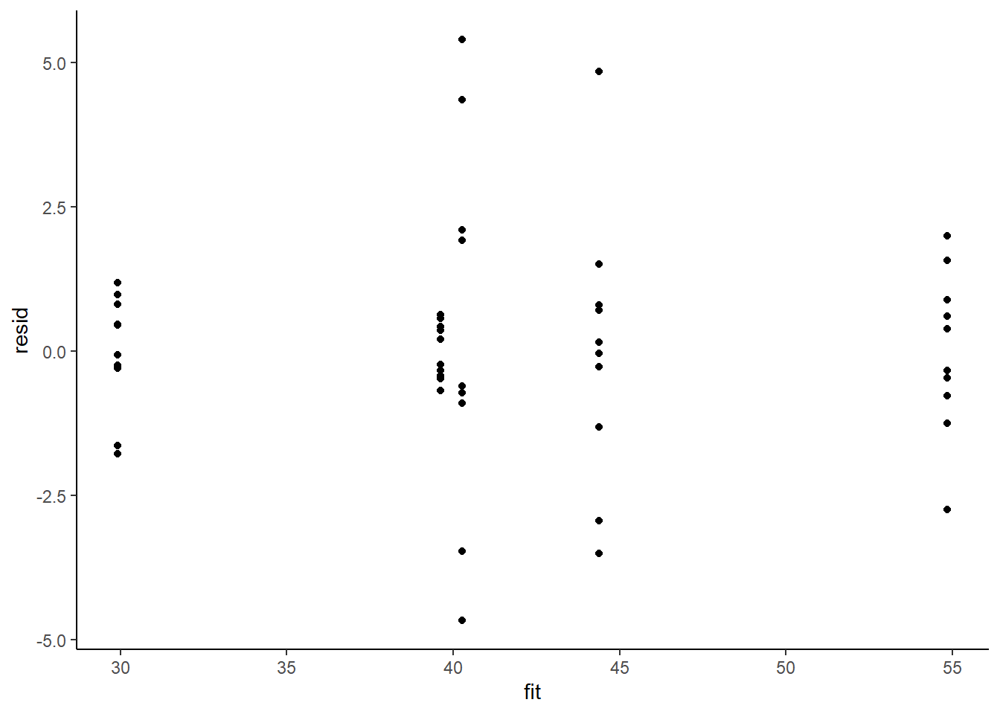
The above residual plot would make us believe that we had a homogeneity of variance issue (which we thought we were addressing by defining a model that allowed the variance to be proportional to the predictor). This is because we have plotted the raw residuals rather than residuals that have been standardized by the variances. The above plot is also what the residual plot would look like if we had not made any attempt to define a model in which the variance was related to the predictor. Whenever we fit a model that incorporates changes to the variance-covariance structures, we should explore standardized residuals. In this case, we should divide the residuals by the appropriate sigma for associated with that group (level of predictor).
This is certainly an improvement. Nevertheless, there is still an indication of a relationship between mean and variance. We could attempt to further address this by refining \(\omega\) in the Bayesian model. That is, rather than indicate that variance is proportional to \(x\), we could indicate that variance is proportional to \(x^2\) (as an example) - we will leave this as an exercise for the reader. Residuals against predictors.
ggplot() +geom_point(data =NULL, aes(y = resid, x = data.het1$x)) +theme_classic()
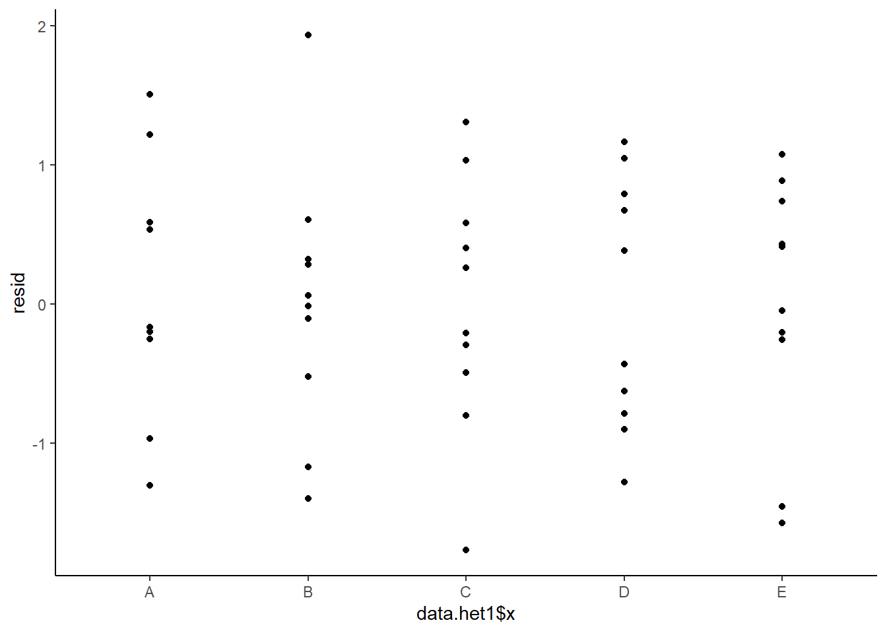
Lets see how well data simulated from the model reflects the raw data.
mcmc = data.het1.r2jags$BUGSoutput$sims.matrix# generate a model matrixXmat =model.matrix(~x, data.het1)## get median parameter estimateswch =grep("beta", colnames(mcmc))coefs = mcmc[, wch]fit = coefs %*%t(Xmat)## draw samples from this modelwch =grep("sigma", colnames(mcmc))yRep =sapply(1:nrow(mcmc), function(i) rnorm(nrow(data.het1), fit[i, ], mcmc[i, wch[as.numeric(data.het1$x[i])]]))newdata =data.frame(x = data.het1$x, yRep) %>%gather(key = Sample, value = Value,-x)ggplot(newdata) +geom_violin(aes(y = Value, x = x, fill ="Model"), alpha =0.5) +geom_violin(data = data.het1, aes(y = y, x = x, fill ="Obs"), alpha =0.5) +geom_point(data = data.het1, aes(y = y, x = x), position =position_jitter(width =0.1,height =0), color ="black") +theme_classic()
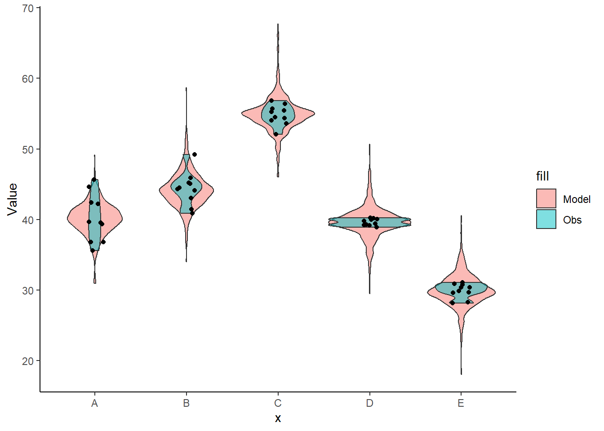
Parameter estimates
First, we look at the results from the model.
print(data.het1.r2jags)
NA Inference for Bugs model at "heteroskModel2.txt", fit using jags,
NA 2 chains, each with 10500 iterations (first 3000 discarded)
NA n.sims = 15000 iterations saved
NA mu.vect sd.vect 2.5% 25% 50% 75% 97.5% Rhat n.eff
NA beta[1] 40.282 1.227 37.861 39.518 40.278 41.044 42.731 1.001 11000
NA beta[2] 4.088 1.508 1.063 3.115 4.095 5.059 7.063 1.001 5000
NA beta[3] 14.553 1.336 11.874 13.714 14.566 15.402 17.177 1.001 5600
NA beta[4] -0.655 1.242 -3.118 -1.425 -0.656 0.118 1.804 1.001 11000
NA beta[5] -10.364 1.286 -12.875 -11.173 -10.353 -9.550 -7.830 1.001 12000
NA sigma[1] 3.748 0.971 2.378 3.062 3.583 4.231 6.071 1.001 13000
NA sigma[2] 2.647 0.729 1.640 2.143 2.504 2.995 4.461 1.001 5400
NA sigma[3] 1.629 0.456 1.001 1.314 1.541 1.846 2.767 1.001 4000
NA sigma[4] 0.570 0.169 0.346 0.454 0.537 0.647 1.001 1.001 3500
NA sigma[5] 1.181 0.336 0.727 0.950 1.118 1.342 2.021 1.001 7100
NA deviance 182.822 5.288 174.824 178.961 182.076 185.810 195.061 1.001 11000
NA
NA For each parameter, n.eff is a crude measure of effective sample size,
NA and Rhat is the potential scale reduction factor (at convergence, Rhat=1).
NA
NA DIC info (using the rule, pD = var(deviance)/2)
NA pD = 14.0 and DIC = 196.8
NA DIC is an estimate of expected predictive error (lower deviance is better).
NA # A tibble: 10 × 5
NA term estimate std.error conf.low conf.high
NA <chr> <dbl> <dbl> <dbl> <dbl>
NA 1 beta[1] 40.3 1.23 37.9 42.7
NA 2 beta[2] 4.09 1.51 0.980 6.97
NA 3 beta[3] 14.6 1.34 12.0 17.3
NA 4 beta[4] -0.655 1.24 -3.15 1.76
NA 5 beta[5] -10.4 1.29 -12.9 -7.86
NA 6 sigma[1] 3.75 0.971 2.23 5.72
NA 7 sigma[2] 2.65 0.729 1.53 4.12
NA 8 sigma[3] 1.63 0.456 0.906 2.54
NA 9 sigma[4] 0.570 0.169 0.313 0.905
NA 10 sigma[5] 1.18 0.336 0.656 1.82
Conclusions
the mean of the first group (A) is \(40.3\)
the mean of the second group (B) is \(4.12\) units greater than (A)
the mean of the third group (C) is \(14.6\) units greater than (A)
the mean of the forth group (D) is \(-0.637\) units greater (i.e. less) than (A)
the mean of the fifth group (E) is \(-10.3\) units greater (i.e. less) than (A)
The \(95\)% confidence interval for the effects of B, C and E do not overlap with \(0\) implying a significant difference between group A and groups B, C and E. While workers attempt to become comfortable with a new statistical framework, it is only natural that they like to evaluate and comprehend new structures and output alongside more familiar concepts. One way to facilitate this is via Bayesian p-values that are somewhat analogous to the frequentist p-values for investigating the hypothesis that a parameter is equal to zero.
mcmcpvalue <-function(samp) {## elementary version that creates an empirical p-value for the## hypothesis that the columns of samp have mean zero versus a general## multivariate distribution with elliptical contours.## differences from the mean standardized by the observed## variance-covariance factor## Note, I put in the bit for single termsif (length(dim(samp)) ==0) { std <-backsolve(chol(var(samp)), cbind(0, t(samp)) -mean(samp),transpose =TRUE) sqdist <-colSums(std * std)sum(sqdist[-1] > sqdist[1])/length(samp) } else { std <-backsolve(chol(var(samp)), cbind(0, t(samp)) -colMeans(samp),transpose =TRUE) sqdist <-colSums(std * std)sum(sqdist[-1] > sqdist[1])/nrow(samp) }}## since values are less than zeromcmc = data.het1.r2jags$BUGSoutput$sims.matrixfor (i ingrep("beta", colnames(mcmc), value =TRUE)) print(paste(i, mcmcpvalue(mcmc[,i])))
NA [1] "beta[1] 0"
NA [1] "beta[2] 0.0116"
NA [1] "beta[3] 0"
NA [1] "beta[4] 0.567133333333333"
NA [1] "beta[5] 0"
mcmcpvalue(mcmc[, grep("beta", colnames(mcmc))])
NA [1] 0
With a p-value of essentially \(0\), we would conclude that there is almost no evidence that the slope was likely to be equal to zero, suggesting there is a relationship.
If you wanted to represent sample data on the figure in such a simple example (single predictor) we could simply over- (or under-) lay the raw data.
ggplot(newdata, aes(y = estimate, x = x)) +geom_point(data = data.het1,aes(y = y, x = x), color ="gray") +geom_pointrange(aes(ymin = conf.low,ymax = conf.high)) +scale_y_continuous("Y") +scale_x_discrete("X") +theme_classic()
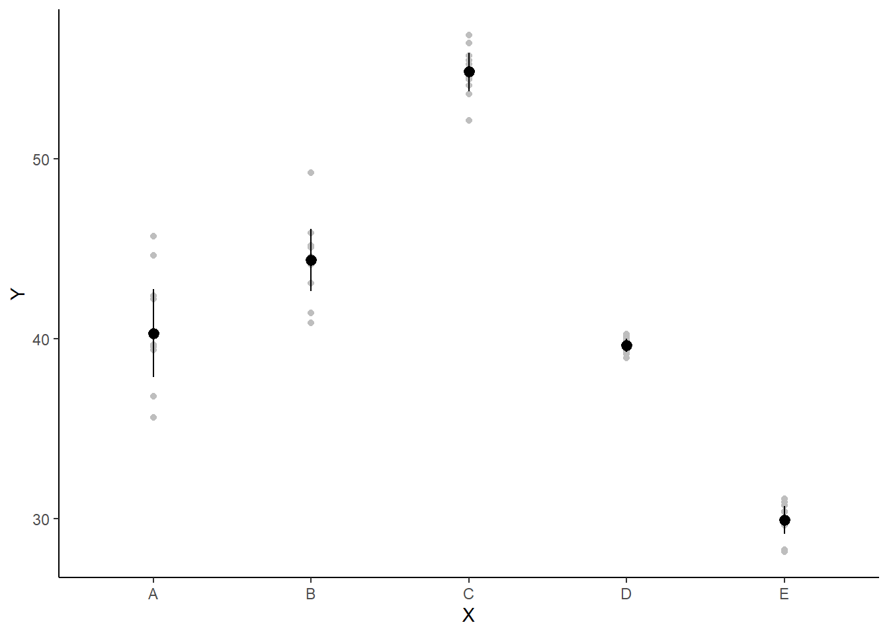
A more general solution would be to add the partial residuals to the figure. Partial residuals are the fitted values plus the residuals. In this simple case, that equates to exactly the same as the raw observations since \(\text{resid}=\text{obs}−\text{fitted}\) and the fitted values depend only on the single predictor we are interested in.
Gelman, Andrew et al. 2006. “Prior Distributions for Variance Parameters in Hierarchical Models (Comment on Article by Browne and Draper).”Bayesian Analysis 1 (3): 515–34.
Gelman, Andrew, Ben Goodrich, Jonah Gabry, and Aki Vehtari. 2019. “R-Squared for Bayesian Regression Models.”The American Statistician 73 (3): 307–9.
Plummer, Martyn. 2004. “JAGS: Just Another Gibbs Sampler.”
Su, Yu-Sung, Masanao Yajima, Maintainer Yu-Sung Su, and JAGS SystemRequirements. 2015. “Package ‘R2jags’.”R Package Version 0.03-08, URL Http://CRAN. R-Project. Org/Package= R2jags.
![]()